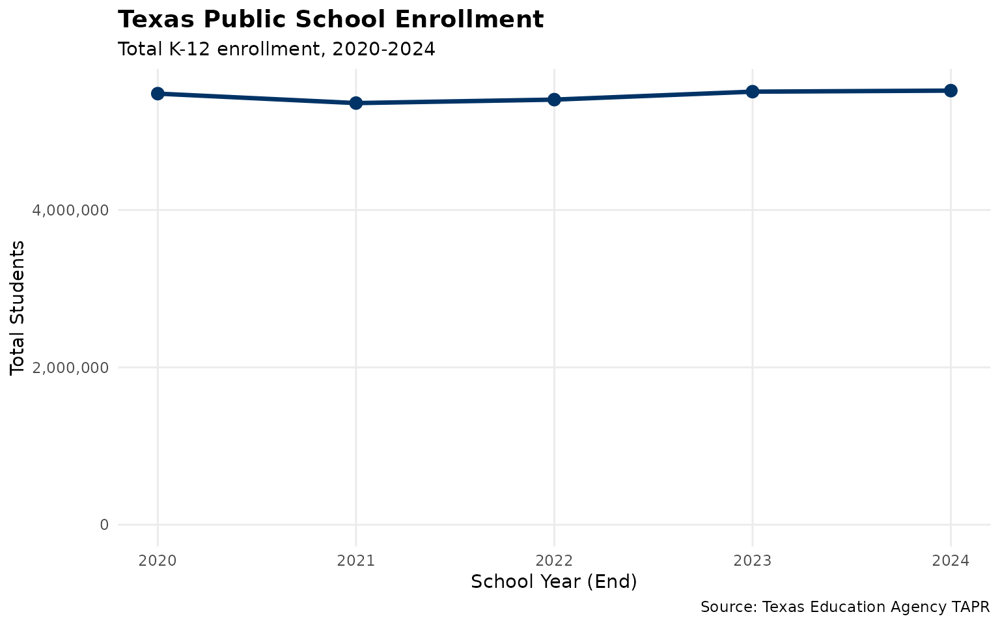
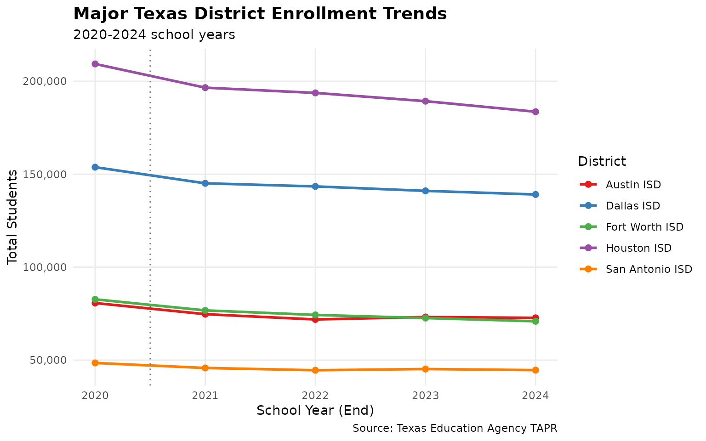

Overview
This vignette performs quality assurance checks on Texas public school enrollment data from the Texas Education Agency (TEA). We analyze statewide trends and examine data for major districts to identify any anomalies or data quality issues.
Data Coverage
TEA enrollment data is available through the TAPR (Texas Academic Performance Reports) system from 2020 onwards via the current download interface.
Statewide Enrollment Analysis
Multi-Year Download
# Download enrollment data for available years
years <- 2020:2024
enr_multi <- fetch_enr_multi(years, use_cache = TRUE)
# State-level total enrollment by year
state_totals <- enr_multi %>%
filter(is_state, subgroup == "total_enrollment", grade_level == "TOTAL") %>%
select(end_year, n_students) %>%
arrange(end_year)
print(state_totals)## end_year n_students
## 1 2020 5479173
## 2 2021 5359040
## 3 2022 5402928
## 4 2023 5504150
## 5 2024 5517464Statewide Enrollment Trend
state_totals %>%
ggplot(aes(x = end_year, y = n_students)) +
geom_line(linewidth = 1.2, color = "#003366") +
geom_point(size = 3, color = "#003366") +
scale_y_continuous(labels = comma, limits = c(0, NA)) +
labs(
title = "Texas Public School Enrollment",
subtitle = "Total K-12 enrollment, 2020-2024",
x = "School Year (End)",
y = "Total Students",
caption = "Source: Texas Education Agency TAPR"
) +
theme_minimal() +
theme(
plot.title = element_text(face = "bold", size = 14),
panel.grid.minor = element_blank()
)
Year-over-Year Changes
# Calculate year-over-year changes
state_changes <- state_totals %>%
mutate(
prev_year = lag(n_students),
change = n_students - prev_year,
pct_change = (change / prev_year) * 100
) %>%
filter(!is.na(prev_year))
print(state_changes)## end_year n_students prev_year change pct_change
## 1 2021 5359040 5479173 -120133 -2.1925389
## 2 2022 5402928 5359040 43888 0.8189526
## 3 2023 5504150 5402928 101222 1.8734656
## 4 2024 5517464 5504150 13314 0.2418902
# Flag any jumps greater than 5%
large_changes <- state_changes %>%
filter(abs(pct_change) > 5)
if (nrow(large_changes) > 0) {
cat("\n** DATA QUALITY ALERT: Year-over-year changes exceeding 5%:\n")
print(large_changes)
} else {
cat("\n** All year-over-year changes are within +/- 5% threshold.\n")
}##
## ** All year-over-year changes are within +/- 5% threshold.Major District Analysis
Texas has over 1,200 school districts. We focus on the 5 largest urban districts for detailed quality checks:
- Houston ISD (101912) - Largest district in Texas
- Dallas ISD (057905) - Second largest
- San Antonio ISD (015907) - Major urban district
- Fort Worth ISD (220905) - Major urban district
- Austin ISD (227901) - State capital
# Define major districts to analyze
major_districts <- tibble(
district_id = c("101912", "057905", "015907", "220905", "227901"),
district_label = c("Houston ISD", "Dallas ISD", "San Antonio ISD",
"Fort Worth ISD", "Austin ISD")
)
# Extract enrollment for major districts
district_trends <- enr_multi %>%
filter(
is_district,
subgroup == "total_enrollment",
grade_level == "TOTAL",
district_id %in% major_districts$district_id
) %>%
left_join(major_districts, by = "district_id") %>%
select(end_year, district_id, district_label, n_students) %>%
arrange(district_label, end_year)
# Display current enrollment
current_enrollment <- district_trends %>%
filter(end_year == max(end_year)) %>%
arrange(desc(n_students))
print(current_enrollment)## end_year district_id district_label n_students
## 1 2024 101912 Houston ISD 183603
## 2 2024 057905 Dallas ISD 139096
## 3 2024 227901 Austin ISD 72739
## 4 2024 220905 Fort Worth ISD 70903
## 5 2024 015907 San Antonio ISD 44635District Enrollment Trends
district_trends %>%
ggplot(aes(x = end_year, y = n_students, color = district_label)) +
geom_line(linewidth = 1) +
geom_point(size = 2) +
scale_y_continuous(labels = comma) +
scale_color_brewer(palette = "Set1") +
labs(
title = "Major Texas District Enrollment Trends",
subtitle = "2020-2024 school years",
x = "School Year (End)",
y = "Total Students",
color = "District",
caption = "Source: Texas Education Agency TAPR"
) +
theme_minimal() +
theme(
legend.position = "right",
plot.title = element_text(face = "bold", size = 14),
panel.grid.minor = element_blank()
)
District Year-over-Year Changes
district_changes <- district_trends %>%
group_by(district_label) %>%
mutate(
prev_year = lag(n_students),
change = n_students - prev_year,
pct_change = round((change / prev_year) * 100, 2)
) %>%
filter(!is.na(prev_year)) %>%
ungroup()
# Pivot to show changes by year
district_change_summary <- district_changes %>%
select(district_label, end_year, pct_change) %>%
tidyr::pivot_wider(names_from = end_year, values_from = pct_change)
print(district_change_summary)## # A tibble: 5 × 5
## district_label `2021` `2022` `2023` `2024`
## <chr> <dbl> <dbl> <dbl> <dbl>
## 1 Austin ISD -7.42 -3.8 1.83 -0.63
## 2 Dallas ISD -5.64 -1.15 -1.66 -1.38
## 3 Fort Worth ISD -7.19 -3.16 -2.27 -2.39
## 4 Houston ISD -6.1 -1.44 -2.29 -3
## 5 San Antonio ISD -5.6 -2.65 1.44 -1.28
# Flag large changes
large_district_changes <- district_changes %>%
filter(abs(pct_change) > 5)
if (nrow(large_district_changes) > 0) {
cat("\n** DATA QUALITY ALERT: District changes exceeding 5%:\n")
print(large_district_changes %>%
select(district_label, end_year, n_students, change, pct_change))
} else {
cat("\n** All major district changes are within +/- 5% threshold.\n")
}##
## ** DATA QUALITY ALERT: District changes exceeding 5%:
## # A tibble: 5 × 5
## district_label end_year n_students change pct_change
## <chr> <int> <dbl> <dbl> <dbl>
## 1 Austin ISD 2021 74725 -5993 -7.42
## 2 Dallas ISD 2021 145105 -8679 -5.64
## 3 Fort Worth ISD 2021 76754 -5950 -7.19
## 4 Houston ISD 2021 196550 -12759 -6.1
## 5 San Antonio ISD 2021 45780 -2715 -5.6Demographic Breakdown Validation
Check that demographic subgroups sum approximately to total enrollment:
# Get 2024 state demographic data
state_2024 <- enr_multi %>%
filter(is_state, end_year == 2024, grade_level == "TOTAL") %>%
select(subgroup, n_students)
# Total enrollment
total <- state_2024 %>%
filter(subgroup == "total_enrollment") %>%
pull(n_students)
# Race/ethnicity subgroups
race_groups <- c("white", "black", "hispanic", "asian",
"native_american", "pacific_islander", "multiracial")
race_sum <- state_2024 %>%
filter(subgroup %in% race_groups) %>%
summarize(sum = sum(n_students, na.rm = TRUE)) %>%
pull(sum)
cat("Total Enrollment:", comma(total), "\n")## Total Enrollment: 5,517,464## Sum of Race/Ethnicity Groups: 5,517,464
cat("Difference:", comma(total - race_sum),
"(", round((total - race_sum) / total * 100, 2), "%)\n")## Difference: 0 ( 0 %)Grade Level Validation
Check that individual grade enrollments sum to approximately total enrollment:
# Get grade-level enrollment for 2024 state
grades <- c("EE", "PK", "K", "01", "02", "03", "04", "05",
"06", "07", "08", "09", "10", "11", "12")
grade_sum <- enr_multi %>%
filter(is_state, end_year == 2024,
subgroup == "total_enrollment",
grade_level %in% grades) %>%
summarize(sum = sum(n_students, na.rm = TRUE)) %>%
pull(sum)
cat("Total Enrollment:", comma(total), "\n")## Total Enrollment: 5,517,464## Sum of Grade Levels: 5,517,464
cat("Difference:", comma(total - grade_sum),
"(", round((total - grade_sum) / total * 100, 2), "%)\n")## Difference: 0 ( 0 %)Data Quality Summary
Issues Identified
issues <- character()
# Check for large state-level changes
if (nrow(large_changes) > 0) {
issues <- c(issues, paste(
"Statewide enrollment changes >5% in:",
paste(large_changes$end_year, collapse = ", ")
))
}
# Check for large district changes
if (nrow(large_district_changes) > 0) {
issues <- c(issues, paste(
"Major district changes >5%:",
nrow(large_district_changes), "instances"
))
}
# Print summary
cat("=== Data Quality Summary ===\n\n")## === Data Quality Summary ===## Years Analyzed: 2020 - 2024## Total State Records: 1,281,090
cat("Districts in Dataset:",
enr_multi %>% filter(is_district) %>% distinct(district_id) %>% nrow(), "\n")## Districts in Dataset: 1216
cat("Campuses in Dataset:",
enr_multi %>% filter(is_campus) %>% distinct(campus_id) %>% nrow(), "\n\n")## Campuses in Dataset: 9540
if (length(issues) > 0) {
cat("Issues Found:\n")
for (issue in issues) {
cat(" -", issue, "\n")
}
} else {
cat("No major data quality issues identified.\n")
}## Issues Found:
## - Major district changes >5%: 5 instancesNotes
Data Source
All data comes from the Texas Education Agency’s TAPR (Texas Academic Performance Reports) system: https://rptsvr1.tea.texas.gov/perfreport/tapr/
Known Limitations
Historical Data: The current download interface only supports years 2020 and later. Earlier years may require different data sources.
COVID-19 Impact: The 2020-2021 school year saw significant enrollment disruptions due to the COVID-19 pandemic. Any unusual patterns in this period should be interpreted in that context.
Charter Schools: Charter school data is included in district totals. The
is_charterflag can be used to separate traditional public schools from charter operators.Data Masking: TEA applies data masking to protect student privacy for small subgroups. Masked values appear as NA in the data.
Session Info
## R version 4.5.2 (2025-10-31)
## Platform: x86_64-pc-linux-gnu
## Running under: Ubuntu 24.04.3 LTS
##
## Matrix products: default
## BLAS: /usr/lib/x86_64-linux-gnu/openblas-pthread/libblas.so.3
## LAPACK: /usr/lib/x86_64-linux-gnu/openblas-pthread/libopenblasp-r0.3.26.so; LAPACK version 3.12.0
##
## locale:
## [1] LC_CTYPE=C.UTF-8 LC_NUMERIC=C LC_TIME=C.UTF-8
## [4] LC_COLLATE=C.UTF-8 LC_MONETARY=C.UTF-8 LC_MESSAGES=C.UTF-8
## [7] LC_PAPER=C.UTF-8 LC_NAME=C LC_ADDRESS=C
## [10] LC_TELEPHONE=C LC_MEASUREMENT=C.UTF-8 LC_IDENTIFICATION=C
##
## time zone: UTC
## tzcode source: system (glibc)
##
## attached base packages:
## [1] stats graphics grDevices utils datasets methods base
##
## other attached packages:
## [1] scales_1.4.0 ggplot2_4.0.1 dplyr_1.1.4 txschooldata_0.1.0
##
## loaded via a namespace (and not attached):
## [1] utf8_1.2.6 rappdirs_0.3.4 sass_0.4.10 generics_0.1.4
## [5] tidyr_1.3.2 hms_1.1.4 digest_0.6.39 magrittr_2.0.4
## [9] evaluate_1.0.5 grid_4.5.2 RColorBrewer_1.1-3 fastmap_1.2.0
## [13] jsonlite_2.0.0 httr_1.4.7 purrr_1.2.1 codetools_0.2-20
## [17] textshaping_1.0.4 jquerylib_0.1.4 cli_3.6.5 rlang_1.1.7
## [21] crayon_1.5.3 bit64_4.6.0-1 withr_3.0.2 cachem_1.1.0
## [25] yaml_2.3.12 tools_4.5.2 parallel_4.5.2 tzdb_0.5.0
## [29] curl_7.0.0 vctrs_0.7.0 R6_2.6.1 lifecycle_1.0.5
## [33] fs_1.6.6 bit_4.6.0 vroom_1.6.7 ragg_1.5.0
## [37] pkgconfig_2.0.3 desc_1.4.3 pkgdown_2.2.0 pillar_1.11.1
## [41] bslib_0.9.0 gtable_0.3.6 glue_1.8.0 systemfonts_1.3.1
## [45] xfun_0.55 tibble_3.3.1 tidyselect_1.2.1 knitr_1.51
## [49] farver_2.1.2 htmltools_0.5.9 rmarkdown_2.30 labeling_0.4.3
## [53] readr_2.1.6 compiler_4.5.2 S7_0.2.1